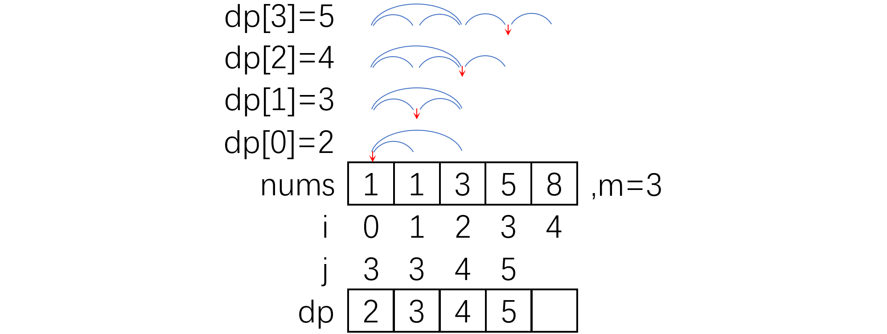

LeetCode719 - (hard) Find K-th Smallest Pair Distance
文章目录
Task
Given an integer array, return the k-th smallest distance among all the pairs. The distance of a pair (A, B) is defined as the absolute difference between A and B.
Example
Example 1:
|
|
Note:
2 <= len(nums) <= 10000.0 <= nums[i] < 1000000.1 <= k <= len(nums) * (len(nums) - 1) / 2.
Solution
- 要找的是第k小的距离，对于标量可使用二分查找：在最小距离和最大距离之间搜索
- 最小距离可认为是0（尽管不一定真的是0，但0确实是一个可用于二分搜索的下界），最大距离是数组中的最大值减去最小值
- 首先将数组排好序，这样可方便的计算距离，且可确保两个元素之间的任意元素到这两个元素之间的距离一定小于这两元素本身的距离，即约束“到某元素的距离小于m的元素一定组成该元素的邻域”
- 二分搜索每次查找一个距离m时，都计算整个数组中有多少对距离小于m
- 若距离小于m的pair数量大于k，则m偏大，修改二分查找的右边界
- 若距离小于m的pair数量小于k，则m偏小，修改二分查找的左边界
- 对查找的每个距离m，使用DP来计算距离小于m的pair的数量：
- 建立与原数组等长的一维DP数组dp[i]，每个dp[i]的值是以下两项的和：
- i左侧（含）的距离<=m的pair总数（这些pair的两个点都在i左侧）
- i右侧（不含）减去i左侧（含）的<=m的pair数量（这些pair的一个点在i左侧而另一个点在i右侧）
- dp数组的递推规律是dp[i]=dp[i-1]+(j-i-1)，其中j是使nums[j]-nums[i]>m的最小j。这样计算递推的原因是：考虑dp[i-1]时i在右侧，而考虑dp[i]时i在左侧，两者相差的那些pair是一个点在i右侧而另一个点就是i的pair，这些pair的数量是j-i-1个，因为数组已排好序
- dp[n-2]即是整个数组中距离小于m的pair的数量
- 由于dp递归时只需递增，故可用一个accumulated sum代替dp数组，将一维dp压缩到0维 
- 建立与原数组等长的一维DP数组dp[i]，每个dp[i]的值是以下两项的和：
时间复杂度：排序是O(nlogn)，二分查找的复杂度是O(log(max-min))，其中每次二分都要搜索一次数组来做dp是O(n)，故整个二分查找的复杂度是O(nlog(max-min))，同时考虑排序和二分查找的总复杂度是O(nlog(max{n,max-min})空间复杂度：将一维dp压缩到0维后没有额外开销，O(1)- 实现：
|
|